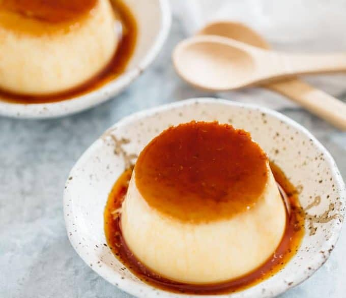

Purin: Japanese Pudding Recipe

Japanese caramel custard pudding is called “Purin”. It is similar to the classic creme caramel or flan.
Purin calls for only a few ingredients and is easy to make.
No special and oriental ingredients nor equipment required.
So people outside of Japan can easily cook Japanese sweets right at home!
Ingredients
Custard Base
- 400 ml milk
- 3 large eggs
- 60 g sugar
- 1/2 tsp vanilla essence
Caramel Sauce
- 70 g sugar
- 50 ml water
Steps
Caramel Sauce
- Place the sugar and water (for the caramel sauce) in a small saucepan over medium heat until the sugar has dissolved.
- Keep cooking over medium heat till the sugar and water mixture turns into a beautiful amber colour.
- Turn the heat off and pour the sauce into 4 pudding molds.
Custard base
- Place milk in a jug and microwave for a 1 a minute and a half to heat the milk up.
- Add the egg, sugar and vanilla essence into a mixing bowl and whisk all together.
- Add warm milk into the egg mixture gradually and stir to combine them all together.
- Strain the custard base using a sieve or strainer.
- Divide and pour the custard mixture into the 4 pudding molds (on top of the caramel sauce).
- Place the molds in a shallow flying pan and add about 750-1000ml water over high heat.
- Bring it to boil then turn the heat down to low, wrap the pan lid in a dry towel and put the lid on and leave it for simmer for 3-5 minutes.
- Turn the heat off and leave it for 15 minutes( do not open the lid).
- Take the molds out of the frying pan and allow them cool down.
- Refrigerate the molds for at least 1 hour.
- Serve it on a plate.